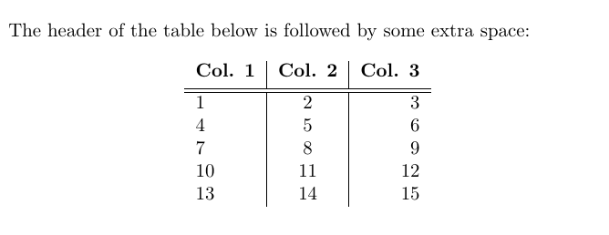
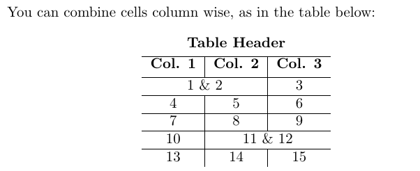
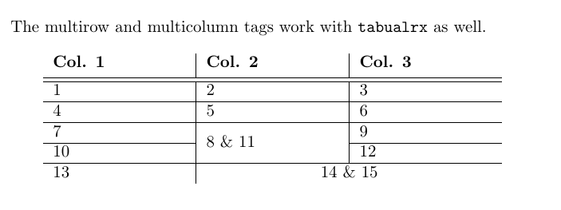

Tables, Figures, and References
Introduction
In this chapter, we will cover the following topics:
- Labels
- Footnotes
- Including figures and pictures
- Captions
- Sub-figures
- Creating tables
- Citing bibliography resources
- Endnotes
Labels
LaTeX allows you to label different environments using the \label{} tag and then later reference them in any part of your document using \ref{}. In the example, you can see how to label and reference sections and subsections. Objects that can be labelled include paragraphs, figures, footnotes, tables and many others. You can use any word you want for each label, as long as every time you use a unique label. It’s a good practice, to keep your labels short and related to the object you are labelling – that way, you can remember them more easily once you need to reference them later in your document. The example presents a good practice of labelling objects first with the abbreviation for their type (e.g. sec for section, tab for table or fig for figure), followed by a colon and then by a short label of the particular object. It’s a common practice to do it like this, however, feel free to come up with a labelling scheme of your own. The numbering for each object is automatic, so you don’t have to worry about remembering which paragraph or figure number you want to reference – LaTeX will update the number for you if you swap their order.
\begin{document}
\section{First}{\label{sec:sec1}}
\subsection{Sub-first}{\label{sec:subsec1}}
\section{Second}
In here I want to reference section \ref{sec:sec1} and then subsection \ref{sec:subsec1}.
\end{document}Footnotes
You can add footnotes to your LaTeX documents simply by using the markup tag \footnote{}. The text that you insert between the curly braces will end up as a footnote in the bottom of the current page. Same as LaTeX environments, footnotes can also be referenced, as seen in the example.

\documentclass{article}
\begin{document}
\section{Footnotes}
We can add a footnote to this text easily \footnote{This is an example footnote}.
\\
We can also label footnotes, so that we can refer to them later \footnote{\label{myfootnote} This is a second footnote}. LaTeX numbers them automatically.
\\
Here I refer to footnote \ref{myfootnote}.
\end{document}Packages
LaTeX has a lot of functionalities beyond those already discussed. Many of them are included in so-called ‘packages’. These are sets of utilities providing you with new functionalities and ways of customising your document. To add a new package, you simply insert the tag \usepackage{name} in the preamble of your document. You will see how to use one of the most important packages in the next section, where you’ll learn how to insert figures into your document.
Including Figures & Pictures
Including Figures
Graphicx package and basic figures
The LaTeX package graphicx makes it possible to insert external graphics into your document. To use the package, simply include the tag \usepackage{graphicx} in the preamble of your document, as in the example below.

\documentclass{article}
%load packages:
\usepackage{graphicx}
%document info:
\title{Sample LaTeX document}
\date{20 April 2019}
\author{John Doe \\
Department of Politics and International Studies \\
University of Warwick}
\begin{document}
Some sample text.
\end{document}Including a Picture
In order to include a picture, simply use the \includegraphics markup tag surrounded by the figure environment, as seen in the screenshot below.
\begin{figure}
\includegraphics{koala.jpg}
\end{figure}Note that for that to work, the picture ‘coala.jpg’ has to be in the same directory (i.e. folder) as your .tex file. To insert a picture from another folder, simply reference its directory explicitly, as shown in the example below.
For Windows:
\begin{figure}
\includegraphics{C:/Users/Jon Doe/Pictures/koala.jpg}
\end{figure}For Mac:
\begin{figure}
\includegraphics{/Library/Desktop Pictures/koala.jpg}
\end{figure}Picture Dimensions
As you can see the resulting picture is rather oversized, doesn’t fit the page and takes up a lot of space. That’s because, by default, LaTeX inserts a picture in its original size – similarly as when you insert graphics in traditional text editors such as Word. To avoid that, we can specify the picture’s size using square brackets before the curly brackets with the file name, as shown in the screenshot below.

\begin{figure}
\includegraphics[width = \textwidth]{koala.jpg}
\end{figure}The resulting figure takes the width of the text written around the picture while maintaining its aspect ratio. We can also specify the size of the pictures manually in centimetres.

\begin{figure}
\includegraphics[width = 12cm, height = 4cm]{koala.jpg}
\end{figure}This, however, can result in distorting the original picture, as in the example. To fix that we can use the ‘keepaspectratio’ option. Which will make the picture as close as possible to the desired size, while maintaining the original aspect ratio of the file.
\begin{figure}
\includegraphics[
width = 12cm,
height = 4cm,
keepaspectratio]{koala.jpg}
\end{figure}Floats
As discussed before, whenever the text you are setting in the .tex file runs beyond the limit of the current page, it’s simply continued in the next page, similarly to what would happen in Word or Pages. Such rule cannot be applied to figures and tables, which need to appear entirely on one page – this is the rationale for using float objects in LaTeX. Floats is the name for a special category of objects in LaTeX, namely those that, unlike text, cannot be split between two pages. Those objects are figures and tables. Whenever you enter a floating environment in LaTeX, you follow it by square brackets, in which you specify the default position it should appear on a new page. You will see the example of this in the next section, applied to figure positioning.
The idea of floats results in a minor, yet very important distinction in LaTeX when it comes to starting a new page. As mentioned earlier in this course, both \newpage and \clearpage can be used to create a new page. However, in the situation when there’s some float pending to be printed on the next page, \clearpage will result in a separate page(s) in which all the queued floats will be inserted, and a new separate page for text will be inserted. When \newpage is used, on the other hand, it will simply create a new page, even if there’s a float on it. The difference can be seen when typesetting the two variants below:
Some text \vspace{10cm}
Some other text \vspace{5cm}
\begin{figure}
\centering
\includegraphics[width = 0.8\textwidth]{koala.jpg}
\caption{This is a picture of coala.}
\label{coala}
\end{figure}
\newpage
This is some more text.
Some text \vspace{10cm}
Some other text \vspace{5cm}
\begin{figure}
\centering
\includegraphics[width = 0.8\textwidth]{koala.jpg}
\caption{This is a picture of coala.}
\label{coala}
\end{figure}
\clearpage
This is some more text.Float Location
Figure is an example of one of the two float objects in LaTeX. You can use square brackets to choose the figure’s location on the page. Depending on the letter – h, t, b we can select the figure to be placed here, at the top of the page or at its bottom. However, note that LaTeX has some built-in parameters to determine what a ‘good’ positioning of a float object is. You may use the ‘!’ with your placement specification to force LaTeX to override its default parameters and rely on your suggestion instead.
Some sample text.
\begin{figure}[h!]
\includegraphics[width=\textwidth]{koala.jpg}
\end{figure}
Other sample text.
Some sample text.
\begin{figure}[t!]
\includegraphics[width=\textwidth]{koala.jpg}
\end{figure}
Other sample text.
Some sample text.
\begin{figure}[b!]
\includegraphics[width=\textwidth]{koala.jpg}
\end{figure}
Other sample text.Float Barriers

\documentclass{article}
\usepackage{graphicx}
\usepackage{lipsum}
\begin{document}
\section{Some latin text}
\lipsum[1-3] %this simply generates dummy text
\begin{figure}[!h]
\includegraphics[width=\textwidth]{koala.jpg}
\end{figure}
\section{Some more latin text}
\lipsum[1-2] %this simply generates dummy text
\end{document}Sometimes the LaTeX float algorithm may be a little unpredictable and misplace your figure. Consider the simple example shown by the first LaTeX code (note that the \lipsum tag is simply used for generating dummy text for LaTeX examples). You have two document sections, Secton I and Section II, and a Figure relevant to the content of Section I. Therefore, you want to place the Figure after all the Section I text, but before the heading of Section II. Because the text from Section I is long, it won’t fit the same page as the Figure. By default, LaTeX will fill the remainder of the page with text from Section 2 and flush out the Figure on the next page. To prevent that, you can use the \FloatBarrier tag from the placeins package. The \FloatBarrier prevents floating environments from floating beyond the place you enter the tag. It is useful to place such barriers at the end of every section, to make sure that each figure remains in its relevant section. This can be seen in the second example:
\documentclass{article}
\usepackage{graphicx}
\usepackage{lipsum}
\usepackage{placeins} %this package containts the FloatBarrier tag
\begin{document}
\section{Some latin text}
\lipsum[1-3] %this simply generates dummy text
\begin{figure}[!h]
\includegraphics[width=\textwidth]{koala.jpg}
\end{figure}
\FloatBarrier
\section{Some more latin text}
\lipsum[1-2] %this simply generates dummy text
\end{document}Sub-Figures
If you need a more advanced figure layout, LaTeX allows you to join multiple sub-figures into one figure – each of them can have their own caption as well as a label for further referencing. Moreover, it’s easy to ensure that they are perfectly aligned with regard to one another, as well as to the overall text layout. To use subfigures, the first thing you will need to do is include \usepackage{subcaption} in the preamble of your document. As you can see in the example, to divide a figure into several subfigures, we simply add a subfigure environment for each subfigure we want to include into one figure environment. Each subfigure environment is associated with its own positioning option specified in the square brackets. It usually makes sense to set them all to the same option (for example t in the example), as it leads to good alignment of the subfigures. Note that we also specify the width of each subfigure using the curly braces – in this case, each of the two koala photos has the width of 0.6 of the text width. When using \includegraphics within the subfigure environment, we can set the width to \textwidth, as the \textwidth attribute is defined separately for the subfigure float (in this case as 0.6 of the document text width).
The distance and layout of the subfigures can be determined by using the spacing markup tags covered in Part 1 of the course. So for example by using \\ \vspace{5mm} between the subfigure environments, we lay the subfigures out vertically, separated by a 5 mm space.

\begin{figure}[ht!]
\centering
\begin{subfigure}[t]{0.6\textwidth}
\centering
\includegraphics[width=\textwidth]{koala.jpg}
\caption{A koala}
\label{fig:koala1}
\end{subfigure}
\\ \vspace{5mm}
\begin{subfigure}[t]{0.6\textwidth}
\centering
\includegraphics[width=\textwidth]{koala.jpg}
\caption{Another koala}
\label{fig:koala2}
\end{subfigure}
\caption{Two koalas}
\label{fig:koalas1}
\end{figure}In this example, on the other hand, the subfigures are placed in a horizontal 2 by 1 layout. That’s because the subfigure environments are separated by the \hfill tag, which fills the space between them horizontally. Using \hfill maximizes the possible distance between the two subfigures, however, \hspace{} would also work if you want to specify the distance manually. Note that if you want to place several subfigures next to each other as in this example, their total width cannot exceed \textwidth. So we can place two figures with width = 0.45 \textwidth or three figures with width = 0.3\textwidth in this manner, but not two figures with width = 0.6\width, as 0.6x2 = 1.2.

\begin{figure}[ht!]
\centering
\begin{subfigure}[h]{0.4\textwidth}
\centering
\includegraphics[width=\textwidth]{koala.jpg}
\caption{A koala}
\label{fig:koala3}
\end{subfigure}
\hfill
\begin{subfigure}[h]{0.4\textwidth}
\centering
\includegraphics[width=\textwidth]{koala.jpg}
\caption{Another koala}
\label{fig:koala4}
\end{subfigure}
\caption{Two koalas}
\label{fig:koalas2}
\end{figure}This last example shows a 3 by 1 horizontal layout of subfigures.

\begin{figure}[ht!]
\centering
\begin{subfigure}[b]{0.3\textwidth}
\centering
\includegraphics[width=\textwidth]{koala.jpg}
\caption{Koala}
\label{fig:koala}
\end{subfigure}
\hfill
\begin{subfigure}[b]{0.3\textwidth}
\centering
\includegraphics[width=\textwidth]{lemur.jpg}
\caption{Lemur}
\label{fig:lemur}
\end{subfigure}
\hfill
\begin{subfigure}[b]{0.3\textwidth}
\centering
\includegraphics[width=\textwidth]{sloth.jpg}
\caption{Sloth}
\label{fig:sloth}
\end{subfigure}
\caption{Three different animals}
\label{fig:animals}
\end{figure}Captions (Flo’s Pet Hate)
Finally, every figure (and table, see next Section) must1 include a caption to describe its content and a label, which can be referenced in the text (similarly to sections and footnotes, as discussed in previous sections). This caption must sit underneath2 the figure (or table).

Some sample text.
\begin{figure}[h!]
\includegraphics[width=\textwidth]{koala.jpg}
\caption{This is a picture of a coala.}
\label{coala}
\end{figure}
Other sample text referring to Figure \ref{coala}Setting Tables
Tables are a useful way of presenting both qualitative and quantitative data in any written piece of work and can often be very helpful in summarizing complex ideas conveyed in the text. While setting them up in LaTeX might appear a bit tedious at first, it gives you a high degree of flexibility and allows you to craft them just the way you want them to look.
Moreover, for all those who would like to present the results of quantitative analysis, many commonly used statistical tools such as Stata (esttab) or R (stargazer, xtable and others) have packages that allow you to create publication-ready LaTeX tables with one or two simple functions.
Tables are set in LaTeX using the tabular environment. The tabular environment begins with \begin{tabular}{cols} and ends with \end{tabular}. Instead of cols, however, we specify the number of columns our table has, as well as the location of text in each of them. So, for example, {ccc} would mean three columns with text centred in each of them, while {lr} would mean two columns, first one with text aligned to the left and the second one to the right. The three basic tabular column types are: - l – left-justified text in column - c – centred text in column - r – right-justified text in column After defining the table, each row is entered by simply entering the content of each cell separated with the ‘&’ character row-wise. To notify LaTeX that a row ends, you use \\, the same character used to insert new line outside of the tabular environment. Note that the number of entries in each row must always match the number of rows specified in the curly braces at the beginning of the tabular environment. You can see a basic table in the example.

\begin{tabular}{ccc}
1 & 2 & 3 \\
4 & 5 & 6 \\
7 & 8 & 9 \\
\end{tabular}As you can see, the output produced by the example does not look too impressive. It may also appear quite tedious to enter all those ‘&’ characters. Fortunately, TexStudio comes in handy with a button allowing you to enter a new row automatically and then only fill in the blank spaces with your content. It is located on the right-hand side of the application toolbar, several buttons to the right from the “compile” button, as seen below.

Separation Lines
To make it look a bit more like a table, you can add lines separating rows and columns. For rows, this is specified by adding the \hline markup tag after the row you want the line to appear. For columns this is set alongside the column specification in the curly braces following the beginning of the tabular environment, using the vertical bar character |. For example \begin{tabular}{c||c||c} means three columns with text centered in cells, separated by double vertical lines. Both can be seen in the example below:

Table with horizontal separation lines.
\begin{center}
\begin{tabular}{ccc}
1 & 2 & 3 \\
\hline
4 & 5 & 6 \\
\hline
\hline
7 & 8 & 9 \\
\end{tabular}
\end{center}
Table with vertical separation lines.
\begin{center}
\begin{tabular}{c|c||c}
1 & 2 & 3 \\
4 & 5 & 6 \\
7 & 8 & 9 \\
\end{tabular}
\end{center}Only because something is possible, does not mean you should do it. Never ever ever use vertical lines in a Table!
You can also use the brackets at the end of a row to add extra spacing before the beginning of the next row, which is particularly useful for table headers. Note that you need to specify the value and then the unit first – for example, [0.5ex] corresponds with roughly half of the height of a lowercase ‘x’ letter in the current font, while [0.5cm] would mean 0.5 centemeters. Check units in LaTeX for more information.

\begin{center}
\begin{tabular}{l|c|r}
\textbf{Col. 1} & \textbf{Col. 2} & \textbf{Col. 3} \\ [0.5ex]
\hline \hline
1 & 2 & 3 \\
4 & 5 & 6 \\
7 & 8 & 9 \\
10 & 11 & 12 \\
13 & 14 & 15 \\
\end{tabular}
\end{center}Fixed Width of Columns
If you need to keep the width of a specified column, you can do that by using the p column type followed by curly braces indicating your desired width. As a result, if your text width exceeds the width of the row, it will be wrapped and the width of the row will decrease, as seen in the example.

\begin{center}
\begin{tabular}{ p{2cm} | p{2cm} | p{2cm} }
\textbf{Col. 1} & \textbf{Col. 2} & \textbf{Col. 3}\\ [0.1cm]
\hline
This row will be longer to fit the length of this cell & text & text \\
\hline
text & text & text\\
\hline
text & text & text\\
\hline
\end{tabular}
\end{center}Controlling Vertical Adjustment
As you might have noticed, the p column type discussed in the previous section aligns each row to the top border of the row. Sometimes, it might be useful to centre the content of each row vertically or align it to the bottom border. This can be done with the column types m{width}, which centres the column text vertically and b{width}, which aligns it to the bottom. These columns can be found in the array package, which can be loaded by putting \usepackage{array} in the preamble of your document, similarily to the way it was done when loading the graphicx package used for including images in your document. Remember that you have to specify the width of these column types in any of the units supported by LaTeX, just as in the case of the p{width} column type.

Presentation of how the \textbf{m} column type works:
\begin{center}
\begin{tabular}{m{2cm}|m{2cm}|m{2cm}}
Col. 1 & Col. 2 & Col. 3\\
\hline
The sentence in this cell is wider than the pre-defined width, therefore it's wrapped into new lines. & Some text in the middle. & Some more text in the middle. \\
\hline
\end{tabular}
\end{center}
Presentation of how the \textbf{b} column type works:
\begin{center}
\begin{tabular}{b{2cm}|b{2cm}|b{2cm}}
Col. 1 & Col. 2 & Col. 3\\
\hline
The sentence in this cell is wider than the pre-defined width, therefore it's wrapped into new lines. & Some text at the bottom. & Some more text at the bottom. \\
\hline
\end{tabular}
\end{center}Combining Rows and Columns
It’s also often useful to combine several cells into one, either row-wise or column-wise. To combine columns, you can use the \multicolumn markup tag. Following the tag, you need to specify three things in subsequent curly braces {number of columns}{column type}{text}. The \multicolumn tag is simply treated as a cell content, but it reduces the number of cells in a given row (i.e. if you specified {c|c|c} at the beginning of the tabular environment and you merge two rows, you will only need to specify two cells – the merged one and the remaining one.

\begin{center}
\begin{tabular}{c|c|c}
\multicolumn{3}{c}{\textbf{Table Header}} \\ [0.5ex]
\hline
\textbf{Col. 1} & \textbf{Col. 2} & \textbf{Col. 3} \\ [0.5ex]
\hline
\multicolumn{2}{c|}{1 \& 2} & 3 \\
\hline
4 & 5 & 6 \\
\hline
7 & 8 & 9 \\
\hline
10 & \multicolumn{2}{|c}{11 \& 12} \\
\hline
13 & 14 & 15 \\
\end{tabular}
\end{center}To combine rows, remember to load the ‘multirow’ package. You can do that by putting \usepackage{multirow} in the preamble of your document. The \multirow markup tag allows you to specify three options in the curly braces – {number of rows}{width}{text}. To merge a cell row-wise, put the tag in the row in the cell in which you would like your extended cell to begin. Then specify the number of rows it will take. You can use ’*’ instead of the {width} parameters to maintain the default parameters of your tabular environment. Make sure that you leave the rows you want merged blank, as in the example below.

This is how you merge cells by row:
\begin{center}
\begin{tabular}{c|c|c}
\textbf{Col. 1} & \textbf{Col. 2} & \textbf{Col. 3} \\ [0.5ex]
\hline \hline
1 & 2 & 3 \\
\hline
4 & \multirow{2}*{5 \& 8} & 6 \\
\cline{1-1} \cline{3-3}
7 & & 9 \\
\hline
10 & 11 & \multirow{2}*{12 \& 15} \\
\cline{1-2}
13 & 14 & \\
\end{tabular}
\end{center}The \cline{i-j} tag is a useful alternative to the \hline tag discussed before when it comes to drawing horizontal lines in tables with merged cells. Using \hline between two rows with some of the cells merged vertically would cause the line to go through the middle of the merged cells. \cline{i-j} allows to avoid that, by specifying which range of cells from the previous row should be separated horizontally from the next row. The range is specified by the values i and j in the curly braces. So \cline{2-5} will cause cells between the 2nd and 5th columns to be separated horizontally from the next row, while \cline{3-3} would separate only the cell from the 3rd column.
Finally, it’s possible to merge selected cells both row-wise and column-wise. To do this, you simply have to combine the \muticolumn and \multirow markup tags. For it to work, you need to first insert a \multicolumn markup tag in the first row and cell you want to merge, and then put a \multirow tag within it, specifying the number of rows you want to merge. Then, in all the following rows you want to be merged you need to specify an empty \multicolumn tag, with the same specification as the ones before.

\begin{center}
\begin{tabular}{c|c|c}
\textbf{Col.1 } & \textbf{Col. 2} & \textbf{Col. 3} \\ [0.5ex]
\hline \hline
1 & 2 & 3 \\
\hline
4 & 5 & 6 \\
\hline
7 & \multicolumn{2}{c}{\multirow{2}*{8 \& 9 \& 11 \& 12}}\\
\cline{1-1}
10 & \multicolumn{2}{c}{} \\
\hline
13 & 14 & 15 \\
\end{tabular}
\end{center}Tabularx
So far you’ve learned how to specify the width of individual columns using the tabular environment. In some cases, it is also good to be able to specify the width of the entire table and keep the width of each column evenly distributed across the table. This can be achieved using the tabularx package. To use it, simply insert \usepackage{tabularx} in the preamble of your document. Then you can use \begin{tabularx}{width}{preamble} instead of the tabular environment. Width specifies the width of the entire table (similarily to the \includegraphics markup tag used for including images in the document) – you can define it using various numeric units available in LaTeX (pt, cm, in) or in reference to the width of the text in the document, using \textwidth. Tabularx contains a new column type, “X”, which means that the width of this column will be determined in relation to the width of the entire table. The rest of the table setup is exactly the same as in the tabular environment.

\begin{center}
\begin{tabularx}{0.6\textwidth}{X|X|X}
\textbf{Col. 1} & \textbf{Col. 2} & \textbf{Col. 3} \\ [0.5ex]
\hline \hline
1 & 2 & 3 \\
\hline
4 & 5 & 6 \\
\hline
7 & 8 & 9 \\
\hline
10 & 11 & 12 \\
\hline
13 & 14 & 15 \\
\end{tabularx}
\end{center}In the tabularx environment, you can also mix the X column type with the tabular column type (l, r, c), so that the width of some of the columns is determined by overall table width (the X columns), while the width of others is determined by the width of the text/fixed (the l, r, c).
Some of the columns can be determined by the width of the table, while either will be determined by the width of the text within them (using the default tabular formats – c for centred (l, r, c).

\begin{center}
\begin{tabularx}{0.6\textwidth}{X|c|X}
\textbf{Col. 1} & \textbf{Col. 2} & \textbf{Col. 3} \\ [0.5ex]
\hline \hline
1 & 2 & 3 \\
\hline
4 & 5 & 6 \\
\hline
7 & 8 & 9 \\
\hline
10 & 11 & 12 \\
\hline
13 & 14 & 15 \\
\end{tabularx}
\end{center}Finally, merging columns and rows can be applied in tabularx, just as in tabular:

\begin{center}
\begin{tabularx}{0.8\textwidth}{X|X|X}
\textbf{Col. 1} & \textbf{Col. 2} & \textbf{Col. 3} \\ [0.5ex]
\hline \hline
1 & 2 & 3 \\
\hline
4 & 5 & 6 \\
\hline
7 & \multirow{2}*{8 \& 11} & 9 \\
\cline{1-1} \cline{3-3}
10 & & 12 \\
\hline
13 & \multicolumn{2}{c}{14 \& 15} \\
\end{tabularx}
\end{center}Defining New Column Types
As you might have noticed, the default “X” column type in LaTeX is not centred, and by default, we have no control over its positioning. However, this can be changed by defining a new column type in the document preamble, after you define all the packages used.
The \newcolumntype command defines a new column type for the tabularx environment based on the default X column. The content of the first curly braces following the command is just the name we assign to the newly created column. Note that the name always has to be a single letter. In this case, for the sake of convenience and clarity, it’s good to name newly defined columns with capital letters (i.e. R for right justification, C for centring and L for left justification) – this makes them easy to remember and we avoid confusing them with the tabular column types defined with small letters.
The second curly braces contain the definition of the new column type. Without going into too much detail, it’s sufficient to remember that, counter-intuitively, \raggedright defines to tabularx column to be justified to the left, \centering to be centred and \raggedleft to be justified to the right. It’s important to remember that these columns can be manually defined, rather than to memorize the exact content of the \newcolumntype command – whenever you will need it, you can just simply copy and paste it.
As you can see in the example, with these newly defined columns we are able to control the justification of the cell content.

\documentclass{article}
\usepackage{multirow}
\usepackage{tabularx}
\newcolumntype{L}{>{\raggedright\arraybackslash}X}
\newcolumntype{C}{>{\centering\arraybackslash}X}
\newcolumntype{R}{>{\raggedleft\arraybackslash}X}
\begin{document}
All three column types defined above are used in the table below:
\begin{center}
\begin{tabularx}{0.8\textwidth}{L|C|R}
\textbf{Col. 1} & \textbf{Col. 2} & \textbf{Col. 3} \\ [0.5ex]
\hline \hline
1 & 2 & 3 \\
\hline
4 & 5 & 6 \\
\hline
7 & 8 & 9 \\
\hline
10 & 11 & 12 \\
\hline
13 & 14 & 15 \\
\end{tabularx}
\end{center}
\end{document}The \newcolumntype command also allows to make many other modifications and create your own, customizable column layouts. For example, by using \newcolumntype{y}[1]{>{\centering\arraybackslash}m{#1}} we can create a column type ‘y’, which is based on the type m (i.e. has a specified width and centres the text vertically), but also additionally applies horizontal centering as well. Generally, however, you don’t need to worry about understanding the intricacies of the \newcolumntype syntax – usually, when you need to customize your columns, it’s enough to just search for suggestions online – it’s likely that some other people have encountered the problem before you, and the solution is already out there. Nevertheless, the ability to specify the width of a table to a fixed number and the customizability of the column types often makes the tabularx package more useful that the basic tabular.
Specifying Row Height
tabularx also makes it possible to set the height of rows in your document to a fixed value. You can do this by adding \setlength{\extrarowheight{height}} before the table in which you want to change the row heights. Every row of each table following this line in your .tex file will have this exact height. To change it back to the default setting, simply use \setlength{\extrarowheight{1pt}}.
Here’s an example of how it works:

\bigskip
%increase the row height
\setlength{\extrarowheight}{10pt}
\begin{tabular}{c|c|c}
1 & 2 & 3 \\
\hline
4 & 5 & 6 \\
\hline
7 & 8 & 9 \\
\end{tabular}
\bigskip
%return to default values
\setlength{\extrarowheight}{1pt}
\begin{tabular}{c|c|c}
1 & 2 & 3 \\
\hline
4 & 5 & 6 \\
\hline
7 & 8 & 9 \\
\end{tabular}The ‘Table’ Floating Environment
Similarily to figures, tables also have their own float environment in LaTeX. As you may remember, the floating environments allow to control the positioning of an object in the document. You can also add captions to these environments, as well as label them, which makes referencing tables anywhere in the document much easier.

\begin{table}[h!]
\centering
\begin{tabular}{c|c|c}
\textbf{Col. 1} & \textbf{Col. 2} &\textbf{Col. 3}\\
\hline
1 & 2 & 3 \\
4 & 5 & 6 \\
7 & 8 & 9 \\
10 & 11 & 12 \\
13 & 14 & 15 \\
\end{tabular}
\caption{Some numbers}
\label{tab:num1}
\end{table}
In this sentence, I am referring to Table \ref{tab:num1}.Lists of Figures and Tables
Listing the figures and tables you’ve used in your LaTeX document is very straightforward – to insert a list of figures, simply place a \listoffigures markup tag in the place you want it to appear (usually beginning of the document) and to add a list of tables use \listoftables. Note that for the figures and tables to be included in their respective lists, they need to have a caption added (using the \caption{} tag inside their respective floats).
\documentclass{article}
\usepackage{graphicx}
\begin{document}
\listoffigures
\listoftables
\newpageCaution: once you include a \listoffigures and \listoftables in your document, LaTeX creates two files in the directory of your .tex file and .pdf output, with extensions .lof (short for list of figures) and .lot (short for list of tables). If you make some changes and you want the lists to be updated, you will need to delete these files first.
Referencing and the List of References
Terminology
Can I just clarify what I mean by “Bibliography” and “List of References” (LoR). These are often used synonymously, or even worse erroneously (yes, I am looking at you, PAIS UG Handbook). So here goes:
Whilst a list of references will only contain the works cited in the text, a bibliography also contains the sources you have used for background reading without including them in your output.
The List of References
.bib files
Similarly to other text editors, LaTeX allows you to create a bibliography source file, which can later be used to reference sources in the text. To store the list of sources, LaTeX uses a separate file with extension ‘.bib’. You can create them and edit them using TexStudio, just as you would for a normal .tex file. Note that it is best to save your .bib file in the same folder as the .tex file in which you want to include the bibliography. After a file is created, you simply use one line of LaTeX code and a reference section will appear at the end with all resources you have cited.
Within the .bib file, each entry has a specified structure, which allows you to specify the type of the resource, the label you assign to it, its author, year of publication and many others. The first example shows a BiBTeX entry for a journal article. Each entry begins with ‘@’, followed by the predefined BibTeX resource types (in this case, ‘article’). After that, a set of curly braces is opened – between them, you define the property of your resource. First a tag (in this case bartels2002) – this is a keyword you will use to cite the resource in your text, much like figure and table labels discussed earlier. You can tag each entry however you want, however it is good practice to stick to a coherent and clear naming convention, especially if you are planning to include many entries in your work. Following that are different attributes of your resource separated by commas. The value for each attribute is provided in curly braces after an “=” character.
@article{bartels2002,
author = {Larry M. Bartels},
title = {Beyond Running Tally: Partisan Bias in Political Perceptions},
journal = {Political Behavior},
volume = {24},
number = {10},
pages = {117-150},
year = {2002},
month = {6},
DOI = {https://doi.org/10.1023/A:1021226224601}}The examples below show the structure of other different resources – a book, a section in a collection (such as Oxford or Routledge Handbooks) and a miscellaneous object (such as a data set). In the examples, each entry is tagged by the author’s name followed by the year of publication. Note that many attributes are optional in most resource types and it’s up to you how detailed do you want to make the specification of each resource. More importantly, some of these are specific to a particular resource type (for example (‘booktitle’ will be meaningful for the @incollection resource type, but not for @article).
@book{popper1934,
author = {Karl R. Popper},
title = {The Logic of Scientific Discovery},
year = {1934},
publisher = {Routledge}}
@incollection{bollen2008,
author = {Kenneth A. Bollen and Sophia Rabe‐Hesketh and Anders Skrondal},
title = {Structural Equation Models},
booktitle = {The Oxford Handbook of Political Methodology},
year = {2008},
editor = {Janet M. Box-Steffensmeier and Henry E. Brady and David Collier},
publisher = {Oxford University Press}}
@misc{worldbank2019,
author = {{The World Bank Group}},
title = {{World Development Indicators}},
url = {https://datacatalog.worldbank.org/dataset/world-development-indicators},
month = {10},
year = {2019}}In the last example, {{The World Bank Group}} is placed in double curly braces. That is to specify that it is an organization (aka corporate author) rather than an individual that authored the resource, and that the order of the world in the name should be maintained when citing (the in-text citation should take the form of The World Bank Group, 2019 as opposed to Group, 2019 which would happen without the second set curly braces, as LaTeX would treat “World Bank Group” as a name of an individual same as “Larry M Bartels”, and therefore would use only the last word in the name, assuming it’s the surname).
The title of the dataset is also placed in double curly braces – that is because, by default, LaTeX makes only the first word in the resource title capitalized and the following words begin with a small letter. If you want to preserve the capitalization of any word in your title, put it in an additional set of curly braces. So title = {World Development Indicators} would yield World development indicators in the LoR section, while title = {{World Development Indicators}} would result in World Development Indicators.
Citing .bib Resources

\documentclass{article}
\usepackage[autostyle]{csquotes}
\usepackage[
backend=biber,
style=apa,
natbib=true]{biblatex}
\addbibresource{bibliography.bib}
\begin{document}
In this sentence, I reference the article \textit{Beyond Running Tally: Partisan Bias in Political Perceptions} included in the bibliography \citep{bartels2002}.
This sentence references the book of the Austrian-British philosopher Karl Popper \citep[pp. 14--15]{popper1934}.
This sentence references a chapter in the Oxford Handbook of Political Methodology \citep{bollen2008}.
Finally, the last sentence refers to a World Bank Data Set, including measures such as HDI \citep{worldbank2019}.
\bibliography{my_bibliography}
\end{document}In order to start referencing resources in your text, all you need to do is load a dedicated package called biblatex in the preamble of your document. This package has a number of different citations styles of which “apa: is the most frequently used one in the Social Sciences. You also need to notify LaTeX of the the bibliography file you are using with a \addbibresource after loading the biblatex package. The last thing you need to do is to add the line \printbibliography where you wish the LoR to be placed. Then you can cite each entry in your bibliography using the \parencite{resource} markup tag, where resource is the tag you have assigned in the .bib file. For example \parencite{bollen2008} will compile as (Bollen et al., 2008). Alternatively, you can use \textcite{bollen2008} will compile as Bollen et al. (2008). Additionally, you can use square brackets after the \parencite and \textcite tags to add a note to be included in the parentheses with the citation, for example, the exact pages to which you are referring. If you want to reference specific pages, say 14-15 of Popper’s book, you can do that by using \parencite[see][pp. 14--15]{popper1934}, which compiles as (see Popper, 1934, pp. 14-15).
Natbib citation
I have grown up using Natbib, and that is perhaps why I find it easier to use. What is certainly true is that it gives you more control over the layout of your references than \textcite and \parencite. These are implemented in natbib with \citet and \citep, respectively. These commands are not only shorter, but they also have their alternative versions - \citealp and \citealt, which remove the parentheses entirely. The difference between \citealp and \citealt is that the latter separates the author’s name and publication year with a comma.
Using square brackets before the citation key allows you to add prefixes and suffixes in the citation. So, when using \citep[option1][option2]{resource}, the option1 will be inserted before and option2 after the citation content. For example \citep[see][p. 23]{bollen:2008} will render as (see Bollen et al., 2008, p. 23). We have enabled these ctation commans with natbib=TRUE in this function:
\usepackage[
backend=biber,
style=apa,
natbib=true]{biblatex}Table 1 summarizes the functionality of different citation commands in Natbib.
| Command | Result |
|---|---|
| \citep{cohen1989} | (Cohen, 1989) |
| \citet{cohen1989} | Cohen (1989) |
| \citep[see][p. 920]{cohen1989} | (see Cohen 1989, p. 920) |
| \citealp{cohen1989} | Cohen, 1989 |
| \citealt{cohen1989} | Cohen 1989 |
| \citet*{schadkeetal2007} | Schadke, Sunstein & Hastie (2007)[1] |
Footnote References
If you want to use footnote references, then the same setup as before applies, but you need to change the style of the biblatex command to “verbose”, such as:
\documentclass{article}
\usepackage[autostyle]{csquotes}
\usepackage[
backend=biber,
style=verbose,
natbib=true]{biblatex}
\addbibresource{bibliography.bib}
\begin{document}
Text
\bibliography{my_bibliography}
\end{document}To produce footnote citations, you need to use \footcite instead of the aforementioned \textcite, \parencite, \citet, or \citep.
Compiling the List of References
In order to produce the LoR, you need to follow these steps in TeXstudio:
- Compile the document to pdf (press F5 as standard)
- Run “biber” which is th enegine to produce the LoR: Tools \(\rightarrow\) Commands \(\rightarrow\) Biber
- Compile the document to pdf again (press F5 as standard).
- Done!
Endnotes

\documentclass{article}
\usepackage{endnotes}
\begin{document}
\section{Introduction}
This is a sentence that refers to a document endnote. \endnote{Some text}
\clearpage
\theendnotes
\end{document}If you prefer your footnotes to appear at the end of your document, use the package ‘endnotes’. To create an endnote use the \endnote markup tag, and enter \theendnotes in the part of your document in which you would like them to appear (usually at the end), similarly to the \tableofcontents tag for the table of contents or the \bibliography tag for references.
An Essay Template
You can download a full template for PAIS Essays in this section. To allow for both referencing styles permissible in PAIS, I have created two templates, one with in-text citations, and a second one with footnote references. You need to put all of the documents listed for each style in the same folder in order for it to work.
The templates fulfill my personal formatting preferences:
- A title page without page numbering
- A table of contents, list of figures, and list of tables, with Roman page numbering
- Text body with Arabic numbering
- A properly formatted “List of References”
To make your life even easier, you can also download the .bib files for each module I teach on the downloads page. These files contain all sources cited on lecture slides and worksheets.
{kind=link}
{kind=link}